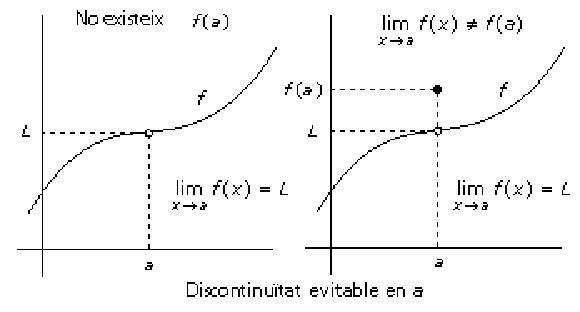

Diem que és un punt de discontinuïtat evitable de si existeix però no existeix o bé
La raó per la qual se’n diu evitable és perquè pot ser contínua si es defineix com el valor del límit de la funció en el punt . Les gràfiques següents són exemples de discontinuïtats d’aquest tipus.
Se’n diu que la funció té una discontinuïtat de salt en un punt si els límits laterals en aquest punt existeixen però són diferents. Distinguim casos particulars: (i) salt finit si els límits laterals son dos nombres reals, (ii) salt infinit o asimptòtica si un límit lateral és un nombre real i l’altre és infinit o ho són tots dos. Les gràfiques següents són exemples de discontinuïtats d’aquest tipus.
Se’n diu que la funció té una discontinuïtat essencial en un punt si no existeixen cap dels límits laterals i, si és el cas, només un d’ells.
Podem definir la continuïtat lateral d’una funció en un punt de la mateixa manera com es va fer en el cas dels límits laterals d’una funció en un punt. Així diem que la funció és contínua lateralment per l’esquerra (resp. per la dreta) en un punt si compleix:
El punt és del domini dela funció
Existeix el límit per l’esquerra (resp. per la dreta) de la funció en el punt
(resp. )